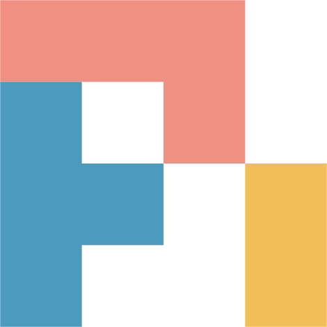

A self-hosted chat interface for the

coding agent.One Go binary. Chat in the browser while Pi reads files, runs commands and draws charts in a workspace folder, with any model Pi supports.
The demo below runs in your browser with scripted replies.
What a chat can do
- Use any model Pi can use
- Pick a model for each chat. Replies stream in with Markdown, maths and highlighted code.
- See every step
- Each file Pi reads or writes and each command it runs shows in the reply, with its output.
- Save agents
- Keep instructions, a model and the tools it may use as an agent. Or describe one in a chat and Pi builds it.
- Connect tools over MCP
- Add an MCP server in Settings, by command or URL, and Pi can use its tools in any chat.
- Charts, pages and images
- Attach files up to 100 MB. Pi can draw charts, build HTML pages that run sandboxed, and make images.
- Keep your chats
- Stop, edit and resend, search, pin and rename. Export any chat as Markdown.
Run it
One command with Docker, or download the binary for Linux or macOS. Then open localhost:8080.
- Pi is in the image. Nothing else to install.
- linux/amd64 and linux/arm64. A laptop, a server or a Raspberry Pi.
- Your chats stay with you. Chats, settings and the workspace live in the
harfvolume.
# keys.env: your model provider keys, one NAME=value per line
$ docker run -p 8080:8080 --env-file keys.env \
-v harf:/home/user ghcr.io/aktech/harf:main
INFO harf listening url=http://0.0.0.0:8080 pi=/opt/pi/pi
Open http://localhost:8080
# needs Pi 1.4.0, signed in with: pi, then /login
# macOS on Apple silicon; also darwin_amd64, linux_amd64, linux_arm64
$ curl -fsSL https://github.com/aktech/harf/releases/latest/download/harf_darwin_arm64.tar.gz | tar -xz
$ ./harf_darwin_arm64/harf
INFO harf listening url=http://127.0.0.1:8080
Open http://localhost:8080